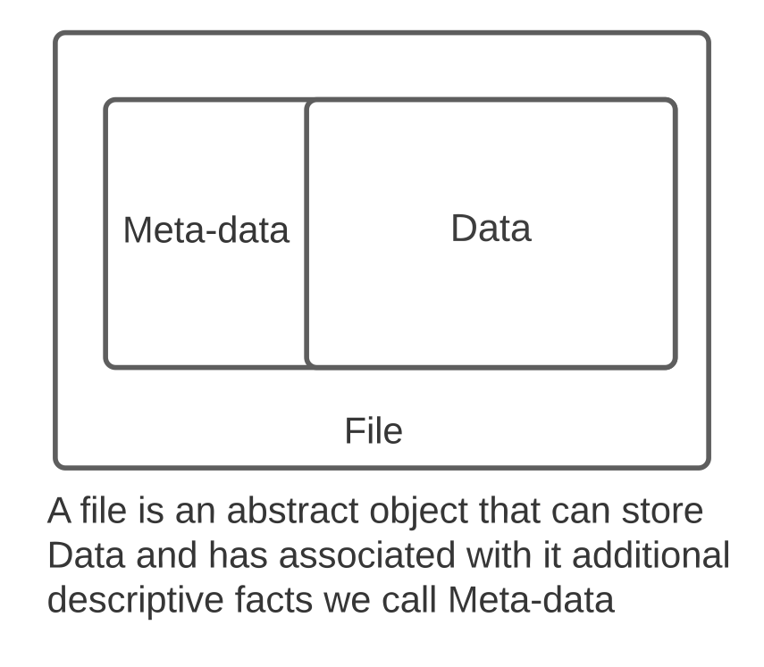
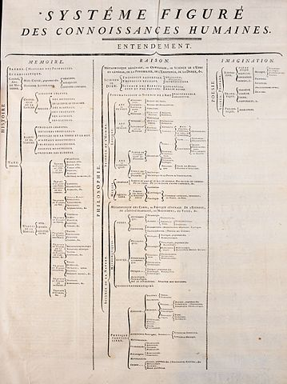
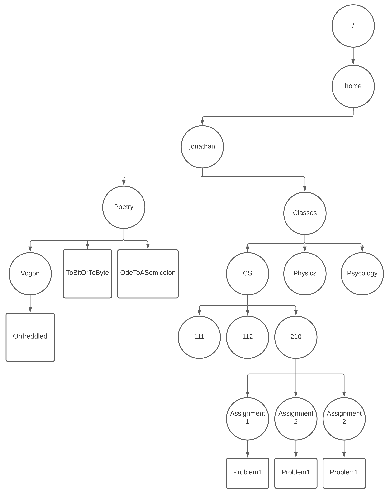

3. Organizing and Managing Information as a Tree of Files and Directories#
Before we get our hands dirty there are a few “ideas” that are worth understanding in order to make our UNIX adventure a little easier.
3.1. Information Management#
Using computers and managing information has become synonymous. You probably take for granted that everyone knowns what a computer “file” and “folder” are and that they have always existed.
This, however, is not true and a fundamental contribution of operating systems was standardizing the notion of files and their organization into a tree structure.
Files and directories are so fundamental to UNIX it is very hard to say anything about UNIX without first understanding a little bit about both.
3.2. Files#

In UNIX a file is an abstract object that can store information. In particular we can write and read contents too and from it.
3.2.1. Data#
We think of the contents of the file as the “data” of the file.
It is important to note that we do not distinguish the “type” of information that the data of a file contains – rather files just contain a collection of bytes. The bytes of the file might encode ASCII data, image data, audio data, an executable program, etc. As we will see later it will be up to us to decide how we want to interpret the contents of a file by what we do with it (eg. open it in a text editor versus opening it in a music player).
3.2.2. Meta Data#
Beyond the information it contains a file has associated with it several other descriptive facts. Examples of these facts include:
who owns the file
the length of the file (measured in bytes)
who has permissions to read or write its contents
the time the contents was last modified
the time that it was last read
the time that the descriptive facts where last changed (eg the file permissions were modified)
We think of other information as the “meta-data” of the file.
3.2.3. An Abstract Object#
Why do say that a file is an “abstract” object? Well when it comes to computers most of the things we think of as “real” are just constructions of software. An operating system like UNIX is responsible for providing us with things like files but in reality there is rarely a single physical object that corresponds to any given file. Rather it is the job of the operating system to use the resources of the computer to create an abstract file object if we ask it to do so and ensure that it behaves as expected.
3.3. Directory Tree#
While files serve as a great building block for managing information they are not enough. People, like librarians, who have managed and curated large bodies of information, know that you need a consistent and yet flexibly way to group, organize and index information. This image illustrates how an 18th century encyclopedia used a hierarchical tree diagram to order its subjects.
{kind=link}

Early operating systems developers adopted a tree structure of nested “directories to allow users to organize their files.
3.3.1. Directories#
A “directory” contains a list of names each name identifies either a single file or another directory.
These entries are said to be within the directory. A directory that is within a directory is said to be a sub-directory. Like a file a directory also has the same kind of meta-data associated with it (owner, permissions, etc). The contents of a directory is, however, the list of its entries. This structure results in the directories and files forming a tree. As such the name of any file or directory is actually a path along the tree.
While this might sound confusing it is really quite intuitive and you have likely been using such a directory hierarchy for most of your digital life.
Perhaps the most important thing to realize is that a UNIX user is allowed to create directories and files and name them as they see fit. This ability allows a user to flexibility organize their information in an way they like and makes sense to them. To get a better handle on this let’s walk through a simple abstract example. Later we will repeat this example but using UNIX commands to get a more exact understanding.
3.3.1.1. Directory Tree Example#
Lets assume that you are a CS student and like poetry and want to organize yourself. To this end you might choose to create the following directory and file structure. 
In this diagram we use circles to represent directories and rectangles to represent files. The name of a directory or file is its label. Arrows are used to show the entries of a particular directory (A file cannot have any arrows starting from it).
3.3.1.2. HOME Directory#
The above diagram assumes that we are the user “jonathan” who has a directory that they own. By creating files and sub-directories within the “jonathan” directory we can organize our information. This personal user directory in UNIX is called the users HOME directory and its name matches the users UNIX user name. We will say more about this when we revisit this example.
Here the user, “jonathan”, has created two sub-directories - Poetry and Classes. Inside the Poetry directory the user has created one sub-directory (“Vogon” – to store their favorite Vogon poetry and two files (“ToBitOrToByte” and “OdeToASemicolon”), two poems they have written).
Similarly we see that the user has created a more complex directory structure to organize their class work. One thing to note, to keep things sensible, names of entries in a single directory must be unique. However, in different directories entries can have the same name – as we can see with the three “Problem1” files at the bottom of the figure. Each of these are in different directories.
3.3.1.3. PATHS and the ROOT#
As a matter of fact from the above diagram we can see that the unique name of a file or directory is really a composition of the directories that traces a path though the tree.
In UNIX the very top of the tree is the one directory that always exists and is not a sub-directory of any other directory. This directory is called the ROOT directory. In UNIX the ROOT directory’s name /. This might seem odd at first but as we will see in a minute it is consistent with the UNIX way of naming a full pathway in the tree.
With this in mind the names of the three Problem1 files at the bottom of the diagram are composed by joining the name of the directories leading to them along with their name at the end.
/\(+\)home\(+\)jonathan\(+\)Classes\(+\)CS\(+\)210\(+\)Assignment1\(+\)Problem1/\(+\)home\(+\)jonathan\(+\)Classes\(+\)CS\(+\)210\(+\)Assignment2\(+\)Problem1/\(+\)home\(+\)jonathan\(+\)Classes\(+\)CS\(+\)210\(+\)Assignment3\(+\)Problem1
In UNIX the notation for a full path name of a file or directory is joining the indepdenent components with the “/” character. So the above three files as proper UNIX path names would be:
/home/jonathan/Classes/CS/210/Assignment1/Problem1/home/jonathan/Classes/CS/210/Assignment2/Problem1/home/jonathan/Classes/CS/210/Assignment3/Problem1
Remember / by itself is the name of the root directory and the full name of any other directory or file begins with / and then is composed of all the parent directories separated by an additional / and ends with the final name of the file or directory being identified.
3.4. Exercises#
3.4.1. A UNIX file is a physical object that exists on the computer’s hard-drive: T/F?#
Think about your answer and then click note for the correct answer
Note
False: A file is an abstract object that the operating system provides. While it is true that for many files the data and meta-data are stored in fragments on one or drives this need not be true for all files.
3.4.2. What is meta-data versus data with respect to files?#
Think about your answer and then click note for the correct answer
Note
Data is the actual contents of the file eg. for a spreed-sheet file the data would be the information that describes the values, formulas, formating, etc. Where as the meta-data is facts that describe the file generically eg. the user that owns the file, who is allowed to read the file, etc.
3.4.3. The directory structure and name of the directories is fixed: T/F?#
Think about your answer and then click note for the correct answer
Note
False: The directory structure and the names of both directories and files is created by the user and can be changed.
3.4.4. In the directory tree example what is the full path name of Jonathan’s Vogon poetry directory?#
Think about your answer and then click note for the correct answer
Note
/home/jonathan/Poetry/Vogon
3.4.5. In the directory tree example what is the full path name of Jonathan’s poem celebrating semicolons?#
Think about your answer and then click note for the correct answer
Note
/home/jonathan/Poetry/OdeToASemicolon
3.4.6. A directory can contain both files and directories: True or False?#
Think about your answer and then click note for the correct answer
Note
True: Any directory can contain both files and sub-directories.